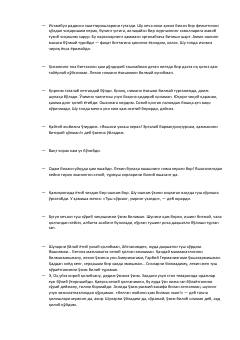

QTYozuvchining oʻz yurtini tushida maqtab yuborishi va gʻaroyib vaziyatlarga tushishi haqidagi hajviy hikoya.
Ushbu asarda yozuvchi kechasi tush koʻrib, oʻz mamlakati haqidagi savollarga chet elliklar oldida oʻzini koʻrsatish maqsadida boʻrttirib, mutlaqo boshqacha javob bergani va bu holatning qiziqarli va kulgili oqibatlari tasvirlanadi. Aziz Nesinning hajviy hikoyasi inson tabiatidagi ayrim nuqsonlar va ijtimoiy holatlarni oʻtkir kulgi ostiga oladi.